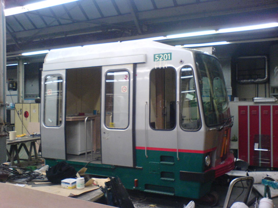

Kop 5201 krijgt tweede leven en ander nieuws...
- maandag 01 december 2008 16:07
- Geschreven door Joachim
De kop van metrorijtuig 5201(A) wordt niet gesloopt maar bewaard. Deze kop verkeerde nog in goede staat, ondanks de brand die in het rijtuig woedde, begin november vorig jaar op station De Akkers in Spijkenisse. Nadat het rijtuig in februari van de draaistellen werd gelicht op het emplacement Waalhaven voor de slopershamer, werd de A-kop van het metrorijtuig gezaagd. De kop verblijft nu in de Centrale Werkplaats Kleiweg. Het gebruiksdoel van de metrokop is tot op heden onduidelijk.
Het is niet de eerste keer dat er een kop van een metrorijtuig wordt afgezaagd. Toen de rijtuigen van het Type M buiten dienst gesteld werden, werd de kop van metrorijtuig 5111 afgezaagd. Kijk hiervoor op metro5111.nl.

De kop van metrorijtuig 5201 in de Centrale Werkplaats Kleiweg.
Schietpartij Zuidplein
Vanwege een schietpartij in de buurt van metrostation Zuidplein, afgelopen vrijdagavond omstreeks 18.00 uur, stopten de metro's op last van de politie niet op dit station. Later op de avond werd weer op de normale wijze gehalteerd. In eerste instantie werd het metroverkeer tussen de stations Slinge en Maashaven v.v. op last van de politie stilgelegd.
Hekwerk
Op station Hoogvliet (perronspoor 1) is begonnen met het plaatsen van nieuwe hekwerken. Hiervoor is een deel van het perron afgezet met afzetlint. Eerder werden dezelfde hekwerken geplaatst op de stations Rijnhaven en Maashaven.
Geleidetegels
Op de stations Voorschoterlaan en Gerdesiaweg zijn de afgelopen weken geleidetegels in de perronvloer aangebracht. Blinde personen kunnen door het geribbelde profiel van de tegels de weg vinden van de metro naar de toegangspoortjes en uitgang en omgekeerd. Momenteel wordt station Oostplein voorzien van dezelfde geleidetegels.